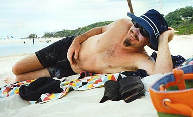
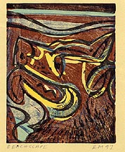
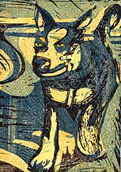
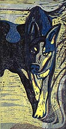
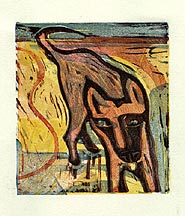

robert moore
artist and bass player
June 1998
Dear Reader,
I think I first met Robert Moore in Qld on the tour after Tim left the Crowdies (then there were three); he was a friend of Paul Hester and Neil Finn and we all fell for, both him and his art. He created the "Then there were Three" Tour posters and you can't go to one of our houses without seeing a bit of Robert on our walls. You'll notice one of his art "guitars" on the wall of the Shed from Hessies Shed show, and it was Robert who took Neil into a field to paint and be himself. He has recently been working on a series of linocuts...featured on this page, but we'll let him explain it, as only Robert can do. Over to Robert
Peter


Beachscape
click on image for larger version |
These linocuts are from a series of pictures I am doing about Tallow Beach.
Tallow Beach is a big long beach south of Cape Byron which streches past some beautiful tea tree lakes to Broken Head. I love going on holidays there because of the many surf breaks (both point and beach) and Tallow Beach north of Gaggin Park

Bear
click on image for larger version |
is a dog beach. This means you can take your dogs there and just let them run wild up and down the great expanse of sand. This may sound hell for some people but for someone like myself who quite often prefers the company of dogs to humans, it's heaven! I take my paints, brushes and canvases down to the beach and set up under a big blue beach umbrella called "The Total Eclipse" and swim, sleep and paint.

Tallow Beach Dog
click on image for larger version |
I much prefer to paint out in the enviroment as I love the way you discover things and images that you could never have thought up by being a studio painter. I also like the collateral damage factor (ie: all the sand, leaves and fortunate mishaps that happen

No Title
click on image for larger version |
while painting al fresco). I guess you could call me a traditional artist in terms of approach but definitely not in terms of execution.
I've been a painter for 12 years; it's what I do, but I've always been involved in music and bands, also music has always
been a good balance and respite from what is quite often a lonely existence as a painter. That's why I had no hesitation in accepting the offer to play bass with Neil as I have always enjoyed his songs and it would be great fun to be part of his touring band. Along the way I know I'll discover some new and exciting landscapes to paint.
Robert Moore, June 1998
Photo of Robert by Mardi Sommerfeld.
brought to you by frenz.com,
the springboard for all that is frenz of the enz |
 visits to this page since 7th June 1998.
visits to this page since 7th June 1998.
Updated 7 June 1998.
Frenz.com is brought to you by 
As Was ® - complete WWW services for businesses (and artists) of every size, budget, and location
If there are any problems with this site, please contact webmaster@aswas.com.
{kind=link}
{kind=link}
{kind=link}
{kind=link}